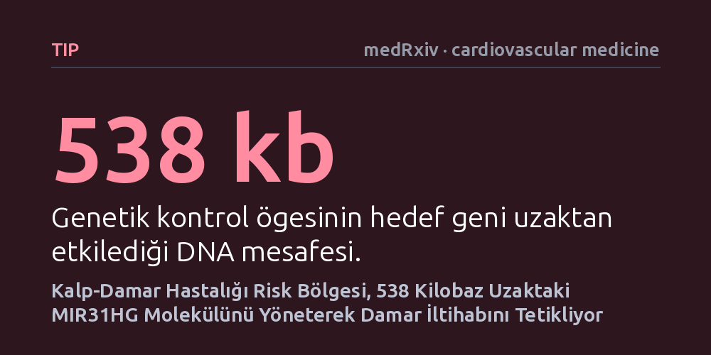

TIP · medRxiv · cardiovascular medicine · 2026-10-20
Araştırmacılar, kalp-damar hastalıklarıyla güçlü bağı bilinen 9p21.3 kromozom bölgesinin damar iç çeper hücrelerindeki işleyişini inceledi. Bu bölgedeki genetik varyasyonların, yaklaşık 538 kilobaz uzaktaki MIR31HG adlı kodlamayan RNA'yı düzenleyerek damar iç çeperinin aktivasyonuna yol açtığı belirlendi.
Kalp krizine zemin hazırlayan en bilinen genetik risk bölgesinin yalnızca damar kaslarını değil, damarın iç astarındaki hücreleri de uzun menzilli bir genetik anahtarla bozduğu anlaşıldı.

Kalp ve damar hastalıkları dünya genelinde en yaygın ölüm nedenlerinden biri olmaya devam ediyor. İnsan genomu incelendiğinde, 9 numaralı kromozom üzerinde yer alan 9p21.3 adlı bölgenin kalp-damar hastalıklarına yakalanma riskini en çok artıran genetik konumlardan biri olduğu uzun yıllardır biliniyor. Ancak bu bölgenin kalp krizi ve damar sertliği riskini tam olarak hangi hücresel mekanizmalar üzerinden artırdığı sorusu hala net bir cevaba kavuşmuş değildi.
Şimdiye kadar yapılan araştırmaların ezici bir çoğunluğu, bu risk bölgesinin damar duvarındaki düz kas hücrelerinde yarattığı işlev bozukluklarına odaklanmıştı. Düz kasların damar sertleşmesindeki rolü iyi bilinse de, damarın kanla doğrudan temas eden en iç katmanını oluşturan endotel hücrelerinin bu tablodaki yeri büyük ölçüde aydınlatılmamıştı. Oysa endotel tabakası, kan akışının düzenlenmesini ve iltihabi tepkilerin kontrol altında tutulmasını sağlayan hayati bir bariyer görevi görür.
Bu çalışmanın ortaya koyduğu temel soru şuydu: Kromozom 9p21.3 bölgesindeki kalıtsal farklılıklar, damar iç astarını döşeyen endotel hücrelerinde hangi hedef genleri devreye sokuyor ve bu hücrelerin işleyişini nasıl bozuyor? Bu sorunun cevabı, damar sertliğine yol açan erken hücresel süreçleri anlamak açısından kritik bir önem taşıyor.
Araştırmacılar bu sorunun cevabını bulabilmek için çok katmanlı bir laboratuvar yaklaşımı benimsedi. İlk aşamada, insan aortasından elde edilen 6 düz kas hücresi ve daha önce profillenen 16 endotel hücresinde kromatin etkileşim haritalaması gerçekleştirildi. Bu teknik, DNA zincirinin çekirdek içinde üç boyutlu olarak nasıl katlandığını ve birbirinden uzak bölgelerin birbirine nasıl temas ettiğini gözler önüne serdi.
Elde edilen bu fiziksel temas haritalarının sadece rastlantısal bir yakınlık olmadığını kanıtlamak için, ekip 136 farklı damar biyopsisini inceledi. Bu biyopsilerdeki genetik varyasyonlar ile genlerin aktiflik seviyeleri arasındaki ilişkiler tek tek analiz edildi. Böylece hangi düzenleyici DNA bölgelerinin hangi genleri fiilen yönettiği istatistiksel olarak desteklendi.
Son olarak, bu geniş etkileşim ağındaki en kritik noktaları belirlemek amacıyla AlphaGenome adlı derin öğrenme algoritması kullanıldı. Algoritmanın işaret ettiği yüksek öncelikli düzenleyici bölge, laboratuvarda CRISPR gen etkinleştirme yöntemiyle doğrudan uyarılarak etkileri canlı endotel hücrelerinde doğrulandı.
Üç boyutlu genom haritalaması, 9p21.3 bölgesinde 19 adet aday düzenleyici öge ile 15 farklı genin karmaşık bir etkileşim ağı kurduğunu ortaya çıkardı. Bu genler arasında en belirgin ve sürekli tekrarlayan temas, MIR31HG adı verilen ve protein üretmeyen uzun bir RNA molekülünün başlangıç bölgesiyle kuruluyordu. Biyopsi analizleri de 9p21.3 bölgesindeki genetik varyasyonların doğrudan MIR31HG seviyelerini etkilediğini doğruladı.
Endotel hücrelerinde yapılan deneyler, MIR31HG molekülünün damar içindeki kan akışının yarattığı mekanik kuvvete doğrudan yanıt verdiğini gösterdi. Hücrelerde MIR31HG seviyesi deneysel olarak düşürüldüğünde, endotel hücrelerinin sakin halini kaybederek endotel aktivasyonu adı verilen iltihabi ve savunmasız bir duruma geçtiği saptandı.
Araştırmanın en dikkat çekici bulgularından biri ise mesafeyle ilgiliydi. Yapay zeka tahminleri ve CRISPR etkinleştirme deneyleri, 9p21.3 bölgesindeki aktif bir güçlendirici dizinin, yaklaşık 538 kilobaz gibi genetik açıdan oldukça uzak bir mesafeden MIR31HG genini kontrol edebildiğini gösterdi. Yani risk bölgesindeki bir genetik anahtar, DNA zinciri üzerinde geniş bir ilmek oluşturarak hedef geni uzaktan yönetiyordu.
Bu bulgular, kalp-damar hastalıklarının genetik kökenlerine dair uzun süredir eksik olan önemli bir boşluğu tamamlıyor. Bugüne kadar yalnızca damar kaslarındaki bozulmalarla açıklanmaya çalışılan 9p21.3 bölgesi riskinin, aslında damarın en iç astarındaki hücrelerin iltihaplanma eşiğini de doğrudan ayarladığı ortaya çıkmış oldu.
Özellikle kodlamayan bir RNA olan MIR31HG'nin kan akışına duyarlı olması ve eksikliğinde damar iç çeperinin iltihaplanması, damar sertliğinin neden belirli damar kıvrımlarında ve akış koşullarında başladığını anlamaya yardımcı oluyor. Kalıtsal risk taşıyan bireylerde bu düzenleyici bağın zayıflaması, damar duvarını erken yaşta yıpranmaya ve plak oluşumuna daha açık hale getiriyor olabilir.
Yine de bu çalışmanın henüz önbaskı aşamasında olduğunu ve bağımsız hakem heyetinden geçmediğini unutmamak gerekir. Hücre modellerinde gösterilen bu uzun menzilli genetik kontrolün canlı insan vücudundaki tüm dinamiklerini teyit etmek ve buradan yeni tedavi stratejileri geliştirmek için ileri klinik çalışmalara ihtiyaç duyulmaktadır.